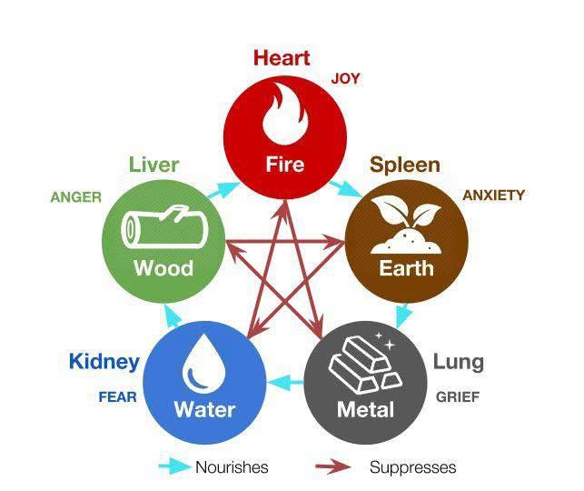
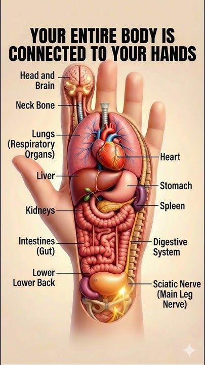
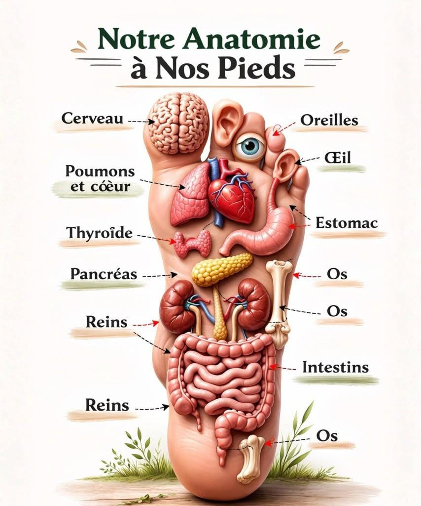
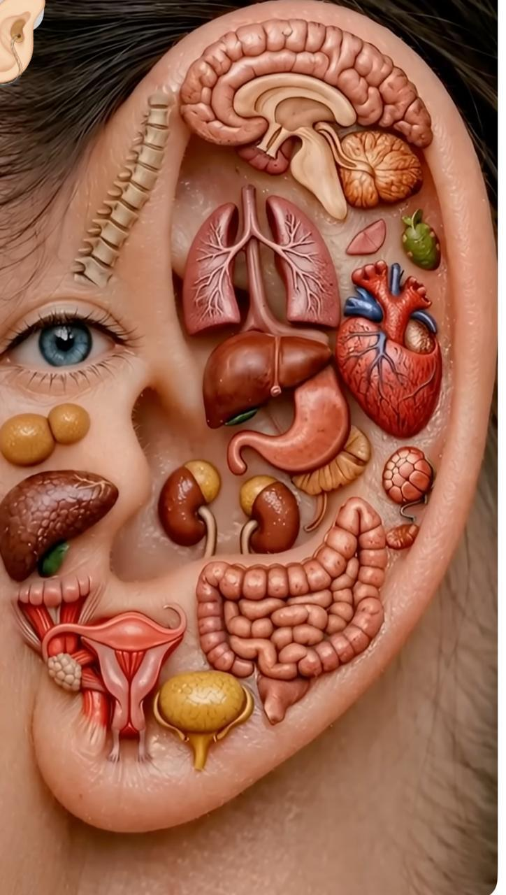
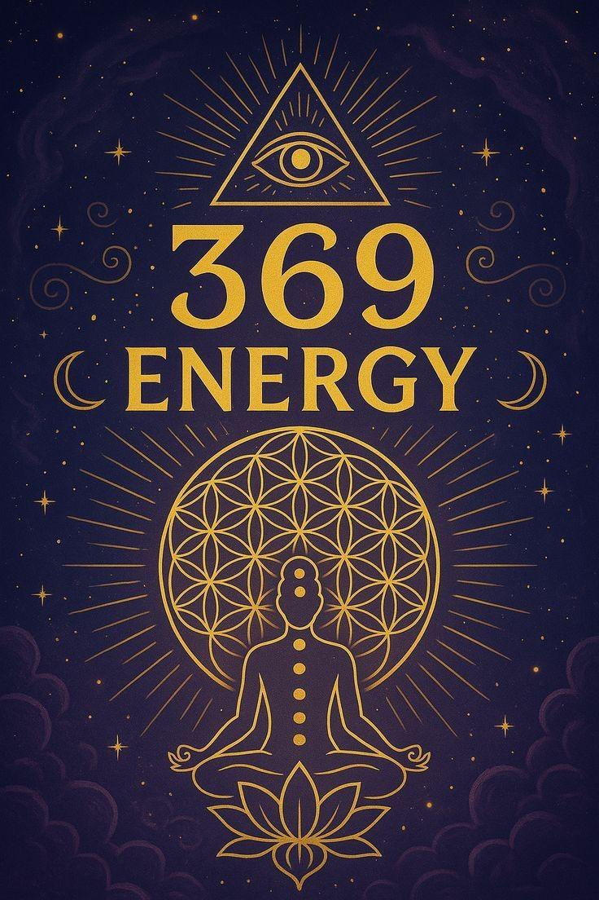
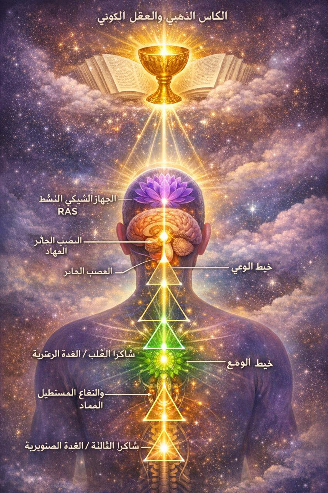

ॐ

Dr. Nada Chatar
الشفاء يبدأ من الداخل
La guérison commence de l'intérieur
Healing begins from within
معالجة شاملة | مدربة معتمدة Thérapeute Holistique | Formatrice Certifiée Holistic Therapist | Certified Trainer
هل تشعر أن هناك قوة داخلك لم تُكتشف بعد؟
ابدأ رحلتك نحو الشفاء، الوعي، والتحول الحقيقي…
Sentez-vous qu'il y a une force en vous qui n'a pas encore été découverte ?
Commencez votre voyage vers la guérison, la conscience et la vraie transformation…
Do you feel there's an undiscovered power within you?
Begin your journey toward healing, awareness, and true transformation…
أنا مدرّبة ومعالجة متخصصة في العلاج الشمولي المتكامل، أعمل على موازنة الجسد والعقل والطاقة من خلال دمج تقنيات متعددة تجمع بين العلم والوعي. Je suis formatrice et thérapeute spécialisée en thérapie holistique intégrée. Je travaille à équilibrer le corps, l'esprit et l'énergie en combinant plusieurs techniques alliant science et conscience. I am a trainer and therapist specializing in integrated holistic therapy. I work on balancing body, mind, and energy by combining multiple techniques that blend science and consciousness.
أعتمد في عملي على مزيج من: العلاج الفيزيائي، الإبر الصينية، السوجوك، الريفلوكسولوجي، إضافة إلى العلاج بالموجات الدماغية، البرمجة اللغوية العصبية (NLP)، وترددات السولفيجيو. Mon approche combine : physiothérapie, acupuncture, Su Jok, réflexologie, thérapie par ondes cérébrales, PNL (Programmation Neuro-Linguistique) et fréquences Solfège. My approach combines: physiotherapy, acupuncture, Su Jok, reflexology, brainwave therapy, NLP (Neuro-Linguistic Programming), and Solfeggio frequencies.
كما أمتلك خبرة متقدمة في مجال الجيوباتيك (طاقات الأرض)، والعمل على خطوط الطاقة مثل هارتمان وكوري، باستخدام تقنيات دقيقة لإعادة التوازن الطاقي في الإنسان والمكان. Je possède également une expertise avancée en géopathie (énergies terrestres), travaillant sur les lignes énergétiques telles que Hartmann et Curry, avec des techniques précises pour rééquilibrer l'énergie chez l'humain et dans l'espace. I also have advanced expertise in geopathology (earth energies), working on energy lines such as Hartmann and Curry, using precise techniques to rebalance energy in both people and spaces.
بخبرة تمتد لأكثر من 13 سنة في هذا المجال، كانت هذه الرحلة نقطة تحول عميقة في حياتي… غيّرت رؤيتي لنفسي، وفهمي للجسد، وكشفت لي أن الشفاء الحقيقي يبدأ من الداخل، من الوعي. Avec plus de 13 ans d'expérience dans ce domaine, ce voyage a été un tournant profond dans ma vie… Il a changé ma vision de moi-même, ma compréhension du corps, et m'a révélé que la vraie guérison commence de l'intérieur, par la conscience. With over 13 years of experience in this field, this journey has been a profound turning point in my life... It changed my vision of myself, my understanding of the body, and revealed to me that true healing starts from within, from consciousness.
وما زلت مستمرة في البحث والتعمّق في تطوير الوعي واكتشاف أسرار الكون والإنسان، لأن هذا الطريق لا نهاية له… بل هو رحلة تطور مستمرة نحو الحقيقة. Je continue à approfondir mes recherches sur le développement de la conscience et la découverte des secrets de l'univers et de l'être humain, car ce chemin est sans fin… c'est un voyage d'évolution continue vers la vérité. I continue to deepen my research into consciousness development and discovering the secrets of the universe and humanity, because this path has no end... it is a continuous journey of evolution toward truth.
رسالتي: أن أساعدك على فهم نفسك بعمق، واستعادة توازنك، وتفعيل قوتك الداخلية. Ma mission : Vous aider à vous comprendre en profondeur, retrouver votre équilibre et activer votre force intérieure. My mission: To help you deeply understand yourself, restore your balance, and activate your inner power.
اكتشف كيف يعمل جسدك وطاقتك معًا لتحقيق التوازن الشامل Découvrez comment votre corps et votre énergie collaborent pour un équilibre global Discover how your body and energy work together for holistic balance
تعلّم أدوات فعالة يمكنك تطبيقها يوميًا للشفاء والتوازن Apprenez des outils efficaces à appliquer au quotidien Learn effective tools you can apply daily for healing and balance
طوّر حدسك وقدرتك على الإدراك العميق للأمور Développez votre intuition et votre perception profonde Develop your intuition and capacity for deep perception
تحرّر من المعتقدات المقيّدة واكتشف إمكاناتك الحقيقية Libérez-vous des croyances limitantes et découvrez votre vrai potentiel Free yourself from limiting beliefs and discover your true potential
خذ زمام حياتك بوعي وقرار واضح Prenez les rênes de votre vie avec conscience et clarté Take the reins of your life with awareness and clarity
دورات متخصصة في الطاقة، الوعي، والجسد — منهج متكامل يجمع بين العلم والروح Formations spécialisées en énergie, conscience et corps — une approche intégrée alliant science et esprit Specialized courses in energy, awareness & body — an integrated approach blending science and spirit
رحلة عميقة لاكتشاف ذاتك الحقيقية وفهم من أنت ولماذا أنت موجود. تعلّم قراءة أنماط الشخصية وفهم طريقة التفكير والسلوك. Un voyage profond pour découvrir votre vrai moi. Apprenez à lire les modèles de personnalité et comprendre les schémas de pensée. A deep journey to discover your true self. Learn to read personality patterns and understand thinking and behavior models.
تقنية علاجية تعتمد على نقاط اليد والقدم لتحفيز الشفاء الطبيعي وتخفيف الألم بفعالية. Technique thérapeutique basée sur les points de la main et du pied pour stimuler la guérison naturelle. A therapeutic technique using hand and foot points to stimulate natural healing and effective pain relief.
تحفيز نقاط القدم المرتبطة بالأعضاء لتحسين الصحة وتحقيق استرخاء عميق. Stimulation des points du pied liés aux organes pour améliorer la santé et atteindre une relaxation profonde. Stimulating foot points linked to organs to improve health and achieve deep relaxation.
تعلم التحكم بطاقة جسمك، رفع التردد، واستعادة التوازن الداخلي. Apprenez à contrôler l'énergie de votre corps, élever la fréquence et restaurer l'équilibre intérieur. Learn to control your body's energy, raise your frequency, and restore inner balance.
استكشاف القدرات العقلية مثل التخاطر والإدراك العالي بطريقة عملية. Exploration des capacités mentales comme la télépathie et la perception élevée de manière pratique. Exploring mental abilities like telepathy and heightened perception in a practical way.
إتقان طاقة الشفاء لعلاج نفسك والآخرين بوعي واحتراف. Maîtrise de l'énergie de guérison pour vous soigner et soigner les autres avec conscience. Master healing energy to treat yourself and others with awareness and professionalism.
تحرير المعيقات الداخلية وفتح مسارات الوفرة. Libération des blocages internes et ouverture des voies de l'abondance. Release inner blockages and open pathways to abundance.
فهم عميق لكيفية ضبط ترددك لجذب ما تريد بوعي حقيقي. Compréhension profonde pour ajuster votre fréquence et attirer consciemment ce que vous désirez. Deep understanding of tuning your frequency to consciously attract what you desire.
استخدام الألوان لتحسين الحالة النفسية والجسدية. Utilisation des couleurs pour améliorer l'état psychologique et physique. Using colors to improve psychological and physical well-being.
اختيار واستخدام الأحجار في الحماية والتوازن والتشافي. Sélection et utilisation des pierres pour la protection, l'équilibre et la guérison. Selecting and using stones for protection, balance, and healing.
تفعيل الحقل الطاقي ورفع مستوى الوعي. Activation du champ énergétique et élévation du niveau de conscience. Activating the energy field and raising the level of consciousness.
تنظيم طاقة المكان لتحسين حياتك — الإنسان، المكان، والزمان. Organisation de l'énergie de l'espace pour améliorer votre vie — personne, lieu et temps. Organizing space energy to improve your life — person, place, and time.
إعادة برمجة العقل والجسم عبر الترددات الصوتية. Reprogrammation du corps et de l'esprit par les fréquences sonores. Reprogramming mind and body through sound frequencies.
تغيير المعتقدات من الجذور والعمل على العقل الباطن بعمق. Changer les croyances à la racine et travailler en profondeur sur le subconscient. Changing beliefs at the root and working deeply on the subconscious.
تحليل طاقة الأماكن باحتراف وتقديم استشارات فعالة. Analyse professionnelle de l'énergie des lieux et consultation efficace. Professional analysis of space energy and effective consulting.
فهم وتوازن مراكز الطاقة وتأثيرها على حياتك. Compréhension et équilibrage des centres énergétiques et leur impact sur votre vie. Understanding and balancing energy centers and their impact on your life.
حركات طاقية تعزز التوازن بين الجسد والعقل. Mouvements énergétiques renforçant l'équilibre corps-esprit. Energy movements enhancing body-mind balance.
تنمية القدرة على التواصل الذهني بوعي وتركيز. Développement de la communication mentale avec conscience et concentration. Developing mental communication with awareness and focus.
فهم علمي للجسم وربطه بالطاقة. Compréhension scientifique du corps et son lien avec l'énergie. Scientific understanding of the body and its connection to energy.
إدارة وتخزين الطاقة لاستخدامها بفعالية أعلى. Gestion et stockage de l'énergie pour une utilisation plus efficace. Managing and storing energy for more effective use.
دمج الطاقة والهندسة المقدسة لرفع الوعي. Fusion de l'énergie et de la géométrie sacrée pour élever la conscience. Merging energy and sacred geometry to elevate consciousness.
تقوية الجسد والطاقة عبر الحركة الواعية. Renforcement du corps et de l'énergie par le mouvement conscient. Strengthening body and energy through conscious movement.
استخدام رموز طاقية للتنقية والحماية. Utilisation de symboles énergétiques pour la purification et la protection. Using energy symbols for purification and protection.
توجيه طاقة الريكي بدقة ونتائج أسرع. Diriger l'énergie Reiki avec précision pour des résultats plus rapides. Directing Reiki energy with precision for faster results.
تضخيم الطاقة باستخدام الأشكال الهندسية. Amplification de l'énergie par les formes géométriques. Amplifying energy using geometric shapes.
دمج العلاج الجسدي مع الطاقة لتحسين النتائج. Intégration de la thérapie physique avec l'énergie pour de meilleurs résultats. Integrating physical therapy with energy for improved results.
تحرير الجسم من الحساسية بطريقة طبيعية. Libérer le corps des allergies de manière naturelle. Freeing the body from allergies naturally.
دعم الجسد والوعي عبر الغذاء. Soutien du corps et de la conscience par l'alimentation. Supporting body and consciousness through nutrition.
فهم النفس والوعي والروح بعمق. Compréhension profonde de l'âme, la conscience et l'esprit. Deep understanding of the self, consciousness, and spirit.
نظام غذائي متوازن مرتبط بالطبيعة. Système alimentaire équilibré lié à la nature. A balanced dietary system connected to nature.
الانسجام مع تغيرات الطبيعة وتأثيرها عليك. Harmonie avec les changements de la nature et leur impact sur vous. Harmony with nature's changes and their impact on you.
فهم رسائل الأحلام وعلاقتها بالحالة الطاقية. Compréhension des messages des rêves et leur lien avec l'état énergétique. Understanding dream messages and their connection to energy states.
رحلات داخلية لتهدئة العقل ورفع الوعي. Voyages intérieurs pour calmer l'esprit et élever la conscience. Inner journeys to calm the mind and raise awareness.
أداة لقراءة الطاقات واتخاذ قرارات بوعي. Outil pour lire les énergies et prendre des décisions en conscience. A tool for reading energies and making conscious decisions.
تحويل التجارب إلى وعي وقوة داخلية. Transformer les expériences en conscience et force intérieure. Transforming experiences into awareness and inner power.
رحلة لاكتشاف الذات الحقيقية. Un voyage pour découvrir votre vrai moi. A journey to discover your true self.
إعادة برمجة العقل الباطن بعمق. Reprogrammation profonde du subconscient. Deep subconscious reprogramming.
تنشيط القدرات الكامنة على المستوى الطاقي. Activation des capacités latentes au niveau énergétique. Activating latent capacities at the energetic level.
إعادة توجيه حياتك بوعي وإدراك. Réorienter votre vie avec conscience et perception. Redirecting your life with awareness and perception.
فهم طاقة الحياة والتوازن الداخلي. Compréhension de l'énergie vitale et l'équilibre intérieur. Understanding life energy and inner balance.
اكتشاف التردد الطاقي للأسماء وتأثيرها. Découverte de la fréquence énergétique des noms et leur impact. Discovering the energetic frequency of names and their impact.
اكتشف عالم الطاقة والوعي والشفاء من خلال مقالاتنا المتخصصة Découvrez le monde de l'énergie, de la conscience et de la guérison à travers nos articles spécialisés Discover the world of energy, consciousness and healing through our specialized articles

كلمة "فينغ" تعني الريح و"شوي" تعني الماء. وهو مزيج قديم من الفن والعلم الصيني نشأ منذ أكثر من 3000 عام لتحقيق الانسجام والتوازن... Le mot «Feng» signifie vent et «Shui» signifie eau. C'est un ancien mélange d'art et de science chinois né il y a plus de 3000 ans... "Feng" means wind and "Shui" means water. It is an ancient blend of Chinese art and science that originated over 3,000 years ago for harmony and balance...
اقرأ المزيد ← Lire la suite → Read more →
في راحة اليد فقط، يوجد تمثيل مصغّر لكامل أعضاء الجسم المهمة. التدليك والضغط والتحفيز الصحيح يساعد على تنشيط الدورة الدموية... Dans la paume de la main se trouve une représentation miniature de tous les organes importants du corps. Le massage et la stimulation correcte activent la circulation... In the palm of the hand lies a miniature representation of all important body organs. Correct massage and stimulation activates blood circulation...
اقرأ المزيد ← Lire la suite → Read more →
في باطن القدم يوجد خريطة انعكاسية لكامل الجسم. كل نقطة ترتبط بأعضاء وعضلات وأنظمة محددة... Sous la plante du pied se trouve une carte réflexe de tout le corps. Chaque point est lié à des organes et systèmes spécifiques... Under the sole of the foot lies a reflexive map of the entire body. Each point is connected to specific organs and systems...
اقرأ المزيد ← Lire la suite → Read more →
الأذن تمثّل خريطة مصغّرة للجسم، حيث ترتبط نقاط معينة فيها بأعضاء ووظائف مختلفة. من خلال تحفيز هذه النقاط يمكن استعادة التوازن... L'oreille représente une carte miniature du corps, où certains points sont liés à différents organes. En stimulant ces points, on peut restaurer l'équilibre... The ear represents a miniature map of the body, where certain points are linked to different organs. By stimulating these points, balance can be restored...
اقرأ المزيد ← Lire la suite → Read more →كل شجرة هي كائن حي يقف بين السماء والأرض، وكأنها قناة تربط بين طاقة الأرض العميقة وطاقة السماء الواسعة... Chaque arbre est un être vivant entre ciel et terre, comme un canal reliant l'énergie profonde de la terre à l'énergie vaste du ciel... Every tree is a living being standing between heaven and earth, like a channel connecting the deep energy of the earth to the vast energy of the sky...
اقرأ المزيد ← Lire la suite → Read more →
إذا أردت أن تفهم أسرار الكون، فكّر من حيث الطاقة، التردد، والاهتزاز. كان تسلا مفتونًا بالأرقام 3 و6 و9... «Si vous voulez comprendre les secrets de l'univers, pensez en termes d'énergie, de fréquence et de vibration.» Tesla était fasciné par les nombres 3, 6 et 9... "If you want to understand the secrets of the universe, think in terms of energy, frequency, and vibration." Tesla was fascinated by the numbers 3, 6, and 9...
اقرأ المزيد ← Lire la suite → Read more →
يُعتبر الجهاز الشبكي المنشّط بوابة الإدراك الواعي والانتباه، بينما يُعد العصب الحائر حلقة الوصل بين جميع المراكز العصبية... Le système réticulaire activé est la porte de la perception consciente, tandis que le nerf vague relie tous les centres nerveux du corps... The reticular activating system is the gateway to conscious perception, while the vagus nerve connects all nervous centers in the body...
اقرأ المزيد ← Lire la suite → Read more →محتوى احترافي مبني على سنوات من الخبرة والممارسة Contenu professionnel fondé sur des années d'expérience et de pratique Professional content built on years of experience and practice
سهل التطبيق مع نتائج ملموسة Facile à appliquer avec des résultats concrets Easy to apply with tangible results
متابعة مستمرة لضمان تقدمك ونجاحك Suivi continu pour assurer votre progression et réussite Continuous follow-up to ensure your progress and success
بدون تعقيد — نهج عملي وروحاني متناغم Sans complication — une approche pratique et spirituelle harmonieuse Without complexity — a harmonious practical and spiritual approach
تغيّرت حياتي بالكامل… أصبحت أرى الأمور بشكل مختلف تمامًا وأشعر بسلام داخلي لم أعرفه من قبل. Ma vie a complètement changé… Je vois les choses différemment et je ressens une paix intérieure que je ne connaissais pas. My life has completely changed... I see things differently now and feel an inner peace I never knew before.
فهمت نفسي لأول مرة… اكتشفت قوة لم أكن أعلم بوجودها في داخلي. Je me suis compris pour la première fois… J'ai découvert une force que je ne savais pas en moi. I understood myself for the first time... I discovered a power I didn't know existed within me.
أصبحت أساعد الآخرين بوعي حقيقي… هذه الدورات غيّرت مسار حياتي المهني والشخصي. Je peux maintenant aider les autres avec une vraie conscience… Ces formations ont changé mon parcours professionnel et personnel. I now help others with true awareness... These courses changed my professional and personal path.
النسخة الأقوى منك تنتظرك. ابدأ الآن وانضم إلى مئات المتدربين الذين غيّروا حياتهم. La version la plus forte de vous-même vous attend. Commencez maintenant et rejoignez des centaines de participants qui ont transformé leur vie. The strongest version of you is waiting. Start now and join hundreds of trainees who transformed their lives.